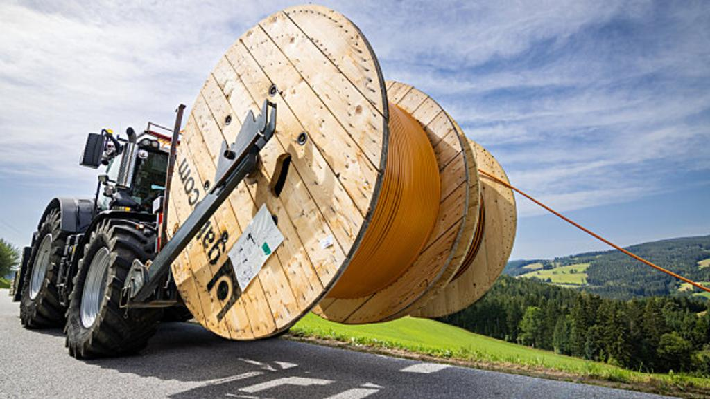
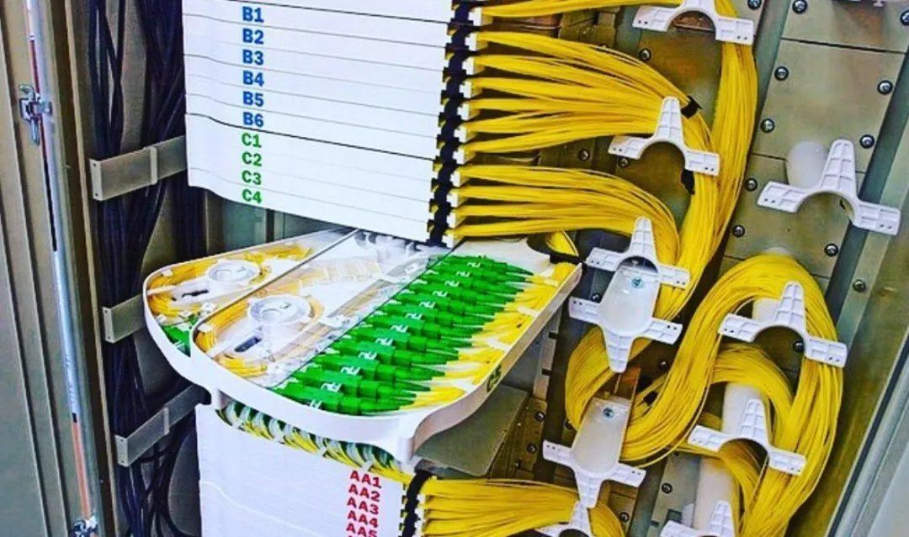
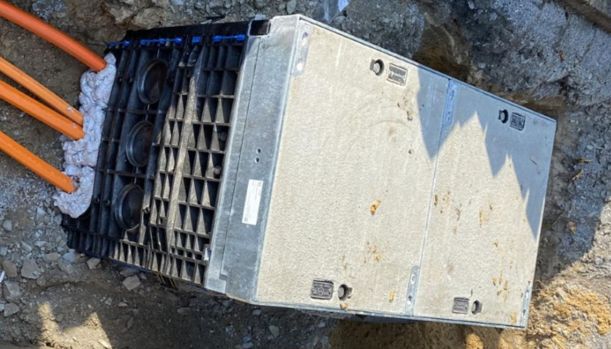
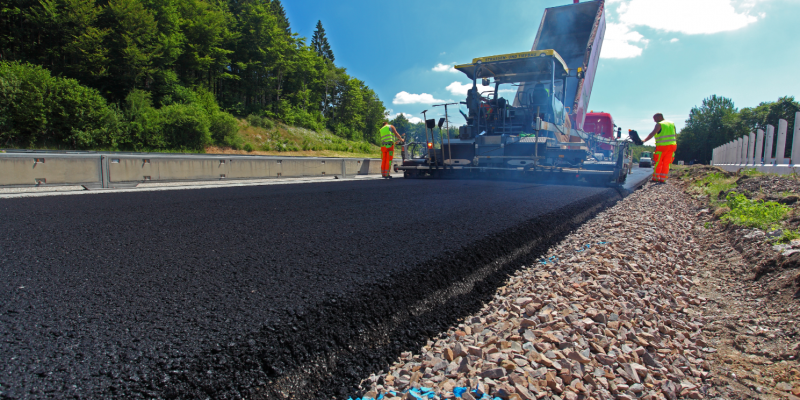
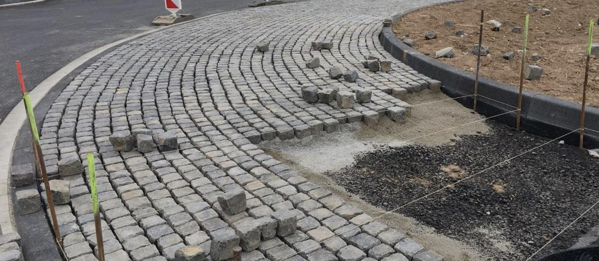
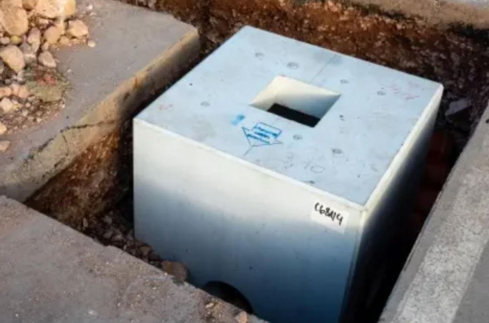

Dienstleistungsübersicht
Glasfaserausbau
Der Glasfaserausbau umfasst die Planung, Verlegung und Inbetriebnahme von Glasfasernetzen, die hochgeschwindigkeitsfähige Internetverbindungen bereitstellen. Unsere Kernkompetenz liegt darin, sowohl Haushalte als auch Unternehmen mit modernster Technologie zu versorgen und die digitale Infrastruktur nachhaltig zu stärken.
Einblastechnik u. Spleißen
Einblastechnik und Spleißen im Glasfaserausbau In unserem Unternehmen führen wir gezielt die Ausführung von Glasfaserausbauarbeiten durch. Dazu gehört die Einblastechnik, bei der wir Glasfaserkabel effizient in bestehende Leerrohre einblasen, sowie das präzise Spleißen, um eine optimale Signalübertragung sicherzustellen. Wir sind spezialisiert auf diese Aufgaben und führen sie im Rahmen beauftragter Projekte aus.
Herstellen von Leerrohranlagen und Kabelschächten
In unserem Unternehmen übernehmen wir die Herstellung von Leerrohranlagen und Kabelschächten. Diese Aufgaben sind essenzieller Bestandteil unserer Dienstleistungen im Glasfaserausbau. Wir sorgen dafür, dass die notwendigen Infrastrukturkomponenten fachgerecht und effizient erstellt werden, um eine optimale Verlegung und den späteren Betrieb von Glasfaserkabeln zu gewährleisten.
Verlegung von Strom- und Telekommunikationskabeln

Bei AJ-Bau GmbH bringen wir Ihre Anschlüsse unter die Erde! Mit unserem erfahrenen Team verlegen wir Strom- und Telekommunikationskabel schnell und zuverlässig. So stellen wir sicher, dass Ihre Infrastruktur stabil und zukunftssicher ist.
Straßen- und Tiefbau
Die AJ-Bau GmbH plant und realisiert Ihre Straßenbauprojekte umfassend. Wir übernehmen Erdarbeiten, Asphaltierung und sorgen für langlebige, sichere Verkehrswege.
Pflasterarbeiten
Die AJ-Bau GmbH bietet professionelle Pflasterarbeiten für Gehwege, Terrassen und Einfahrten. Wir sorgen für langlebige und ansprechende Oberflächen, die Ihre Außenbereiche aufwerten.
E-Ladesäulen für eine grüne Zukunft
Die AJ-Bau GmbH ist Ihr Partner im Tiefbau für den Aufbau von E-Ladesäulen. Wir sorgen dafür, dass Ihre Ladesäulen zuverlässig und schnell installiert werden. Gemeinsam tragen wir zur Förderung der Elektromobilität und einer umweltfreundlichen Zukunft bei!
Interne Planung, Vermessung und Dokumentation
Engineering by AJ - Bau
AJ - Bau hilft Ihnen bei Einblastechnik, Vermessung, Spülbohrungen und Leitungsdokumentation. Mit moderner GPS-Technik und eigener Software stellen wir sicher, dass verlegte Leitungen auch Jahre später genau gefunden werden.
Wir planen, beraten, vermessen und dokumentieren – alles, was Ihr Projekt braucht. Mit unserer Erfahrung und den neuesten Technologien finden wir die beste Lösung für Ihre Anforderungen.
AJ - Bau GmbH
Wilhelmstraße 118
12345 Koln
E-Mail: info@aj-bau.de
E-Mail: Telefon: 12348684543
Angaben nach §5 TMG
Impressum
Datenschutz
Haftungsausschluss
Cookies